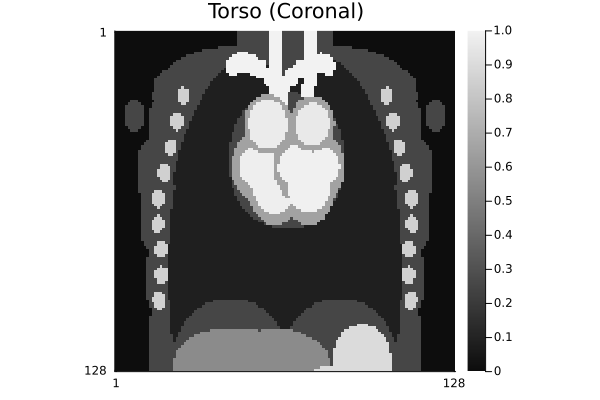

GeometricMedicalPhantoms.jl
GeometricMedicalPhantoms provides tools for generating realistic medical imaging phantoms. These synthetic images are essential for testing reconstruction algorithms, validating imaging methods, and developing new acquisition strategies without requiring real patient data.
Why Use Phantoms?
Phantoms are useful for:
- Algorithm validation: Test reconstruction methods with known ground truth
- Method comparison: Benchmark different imaging techniques
- Quality assurance: Verify scanner performance and image processing pipelines
- Teaching and learning: Understand MRI physics and acquisition concepts interactively
- Research: Prototype new acquisition strategies and reconstruction approaches
Available Phantoms
The package provides three distinct phantom types suited to different needs:
| Phantom | Purpose | Dimensions | Features |
|---|---|---|---|
| Shepp-Logan | Classic test phantom | 2D slices or 3D volume | Multiple intensity options, tissue masking |
| Torso | Anatomical realism | 2D slices of 3D anatomy | Heart, lungs, liver, vessels, physiological motion |
| Tubes | Validation & QC | 2D or 3D | Geometric precision, customizable configuration |
Quick Start
Here's a typical workflow:
# Create a Shepp-Logan phantom (2D axial slice)
phantom_2d = create_shepp_logan_phantom(256, 256, :axial)
# Visualize it
jim(phantom_2d; title="Shepp-Logan Phantom", clim=(0.95, 1.05), yflip=false)
# Create a Torso phantom with anatomical details
torso = create_torso_phantom(128, 128, :coronal)
jim(torso; title="Torso (Coronal)", yflip=false)
# Create a validation phantom
tubes = create_tubes_phantom(256, 256, 256)
jim(tubes[:, :, div(end, 2)]; title="Tubes Phantom (Middle Slice)")
Next Steps
- Learn about the Shepp-Logan phantom and its intensity variants
- Explore the Torso phantom with physiological motion
- Use the Tubes phantom for validation
- Check out standalone CLI interface for rendering phantoms without installing Julia
- Understand geometry primitives for building custom phantoms
- Create your own phantom by following the custom phantoms guide